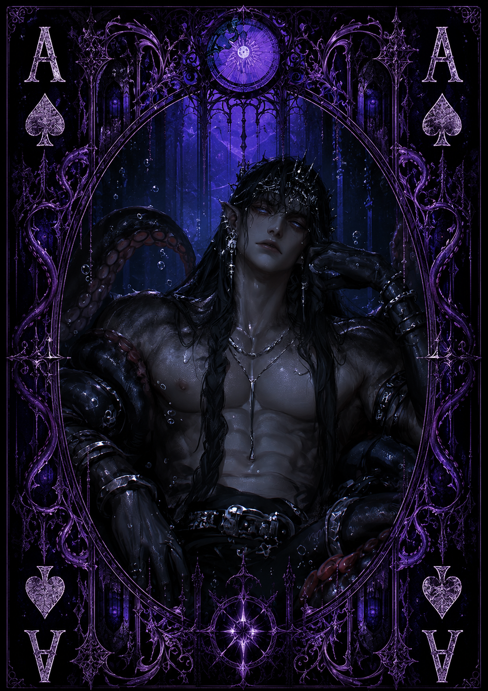

| Race | Krater |
| Gender | Male |
| Age | Over 800 Years |
| Nation | Nethralis Seas |
| Weapon | Abyssal Tentacles |
| Magic | Abyssal Magic |
Nocthar is an ancient Krater who inhabits the darkest and deepest regions of the Nethralis Seas, rarely venturing close to the surface. Recognizable by the enormous tentacles extending from his body, he is an imposing creature whose presence alone is enough to terrify those unfortunate enough to encounter him in the abyss.
Hostile, arrogant, and often deliberately rude, Nocthar has little patience for others. Yet beneath his intimidating behavior lies an intense curiosity. Things he does not understand easily capture his attention, occasionally making curiosity stronger than his instinct to threaten or attack.
Nocthar possesses tremendous physical and magical strength, earning him a reputation as one of the most dangerous creatures within the Nethralis Seas. His enormous tentacles function as natural weapons, while his mastery of Abyssal Magic allows him to manipulate the dark energies of the ocean depths. Encounters with him are considered extremely dangerous even for experienced warriors.
His greatest ambition is to become the supreme ruler of the sea. Nocthar believes that the entirety of the ocean should eventually recognize his authority, though he rarely leaves the abyss to pursue that goal directly. For now, he waits in the darkness below, watching the world above with equal parts ambition and fascination.